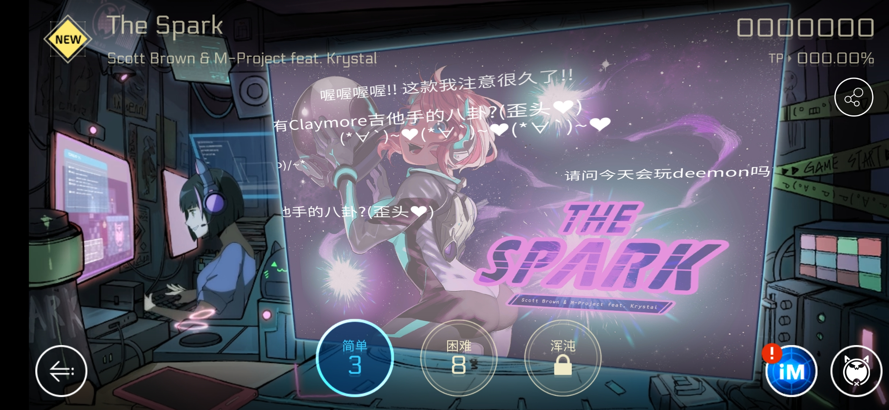
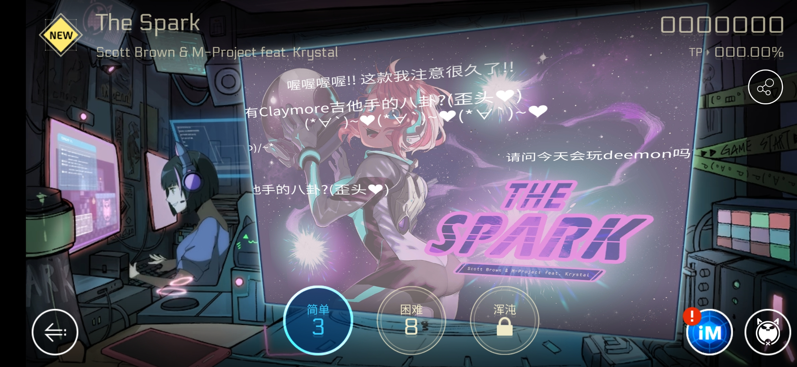

游戏体验与分析
Cytus 2体验
音游与世界观
孙大妖怪问节奏大师：音乐游戏需要世界观和剧情吗？
节奏大师：世界观是啥子个意思？我只知道曲库和好友系统
音乐世界Cytus Ⅱ：……果然背靠大佬就是可以为所欲为
Deemo拍拍节奏大师的肩膀深沉地说：知道为啥Taptap评分我是满分你才8.1不？
Phigros：b站萌新围观围观~
节奏大师：世界观是啥子个意思？我只知道曲库和好友系统
音乐世界Cytus Ⅱ：……果然背靠大佬就是可以为所欲为
Deemo拍拍节奏大师的肩膀深沉地说：知道为啥Taptap评分我是满分你才8.1不？
Phigros：b站萌新围观围观~
音游与世界观结合的好处
- 契合音乐风格
- 许多音乐游戏都是以电音为主（主要是电音版权便宜？），电音清脆利落的风格天然带有一种科技感，将游戏放在未来世界的背景下很好地契合了这一风格。
- 契合UI界面
- 以电音为主的音游UI界面走的都是科技风，实际上是完成了UI界面和游戏内容的一致，而实际上是恰当的世界观将这种一致性的最后一环完成。在下左图中，玩家仿佛身处一个未来世界的演唱会之中，很自然地进入到游戏的世界观中。下右图是人物的一个调音室，似乎屏幕上还在现场直播。
- 丰富玩家体验
- 在当前音游的玩法类似的情况下，如果没有人文包装，音游往往成为消磨时间的方式（得分就是冰冷的数字而已），但在人文包装下，点击的方块可能就是人物的心声，可能会影响剧情的走向，玩家在倾听心声、促成理想剧情的过程中也收获了情感上的体验。
 

Cytus 2的世界观和剧情
- 世界观
- 未来世界，现实与网络深度交融，整个游戏内容都是巨型精神网络空间cyTus中的一次狂欢。
- 剧情
- 歌曲以人物为单位划分，人物可升级，人物有自己的故事，借鉴了卡牌游戏。
UI界面
- 科技风（下左图）
- 黑白灰的主色调+较淡的冷色调（色调深浅形成层次感）+点、线条、矩形、立方体的轮廓构造（逻辑感）+程序风的过场动画和装饰配件
- 动漫风（下右图）
- 主要体现在人物和选歌界面，可以吸引一批二次元爱好者